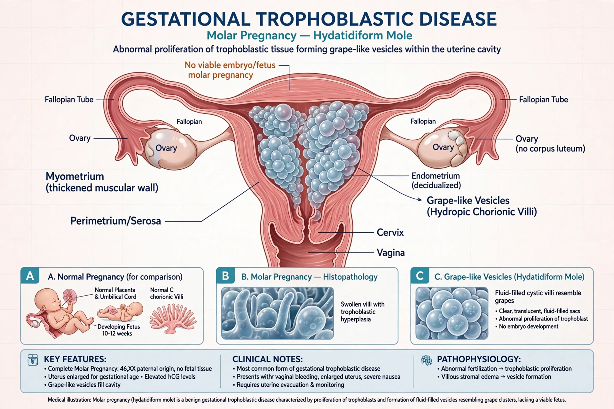

Gestational trophoblastic disease (GTD) is a group of rare diseases in which abnormal trophoblast cells grow inside the uterus after conception. It includes hydatidiform moles (complete and partial), invasive mole, choriocarcinoma, placental-site trophoblastic tumour and epithelioid trophoblastic tumour.

Molar pregnancy may present with vaginal bleeding, a uterus large for dates, hyperemesis, very high β-hCG and a characteristic 'snowstorm' / 'bunch of grapes' ultrasound appearance without a viable fetus (complete mole). Diagnosis is confirmed histologically after uterine evacuation.
Persistent disease after a mole, or choriocarcinoma, is called GTN. It is highly chemosensitive: low-risk disease is treated with single-agent methotrexate — GTN provided the first solid tumour cured by chemotherapy (1956) — and high-risk disease with multi-agent regimens such as EMA-CO. Cure rates approach 100% for low-risk disease with β-hCG monitoring.
Serial β-hCG surveillance after evacuation is essential to detect persistence early; pregnancy is deferred during monitoring.